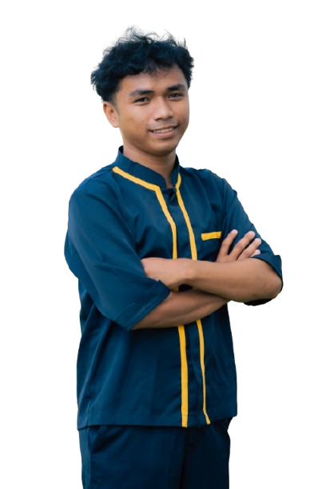
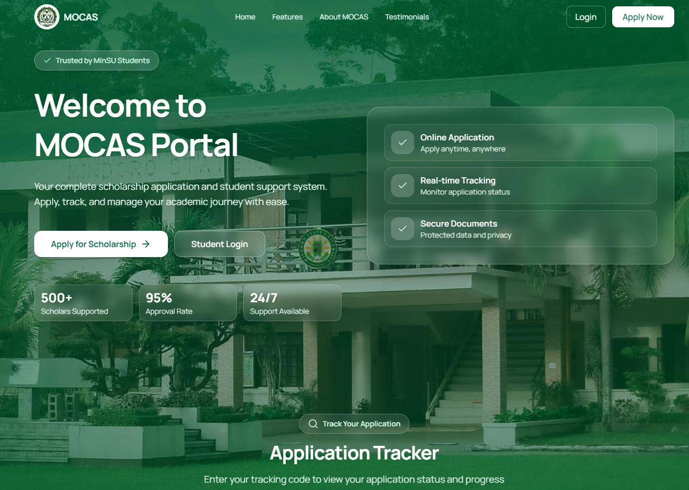

01 / PRODUCT DASHBOARD
PadBuddy
A clear view of the field. PadBuddy brings rice-farm operations, field maps, and progress tracking into one friendly dashboard.
Full-stack developer / thoughtful by design
I’m Theus Vito. I build useful, considered web experiences — from the first interaction to everything behind it.

Selected work / 2024—26
A collection of ideas shaped into practical, people-first experiences.
A clear view of the field. PadBuddy brings rice-farm operations, field maps, and progress tracking into one friendly dashboard.
A focused sign-in experience for a document tracking tool, designed to feel at home in both light and dark mode.

03 / SCHOLARSHIP PORTALA scholarship application and student support portal, bringing online applications, status tracking, and document access together.
A fashion storefront with a confident visual identity, designed to bring curated pieces and a boutique feel to the web.
The person behind the pixels
I’m an Information Technology graduate with hands-on experience in full-stack development, IoT systems, and IT support.
I’ve led projects and integrated web applications with hardware, building practical solutions—from thoughtful interfaces to connected systems that make everyday work easier.
01 / EXPERIENCE
National Commission on Indigenous Peoples · Central Office, Quezon City
March – May 2026
02 / TOOLKIT
Next.js · React · TypeScript · JavaScript · Vue.js · HTML · CSS · Tailwind
Node.js · PHP · Laravel · Firebase · Firestore · MySQL
PWA · Flutter · Windows Forms · C#
ESP32 · Arduino · Raspberry Pi · C++ · Git · GitHub · VS Code · Visual Studio · Android Studio · Arduino IDE
03 / EDUCATION
Mindoro State University – Bongabong Campus
June 2026 · Bongabong, Oriental Mindoro
Bulbugan National High School · 2022 · Gloria, Oriental Mindoro
Find me around the web
Follow along, explore what I’m building, or get in touch directly.
Have something in mind?
I’m always excited by thoughtful ideas and the people behind them.